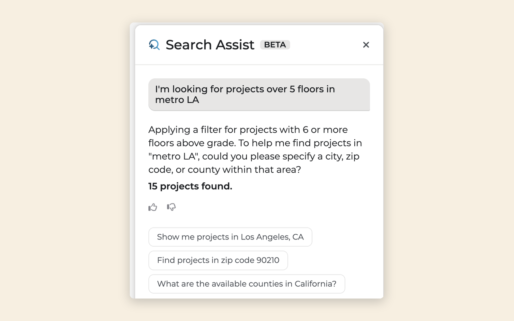
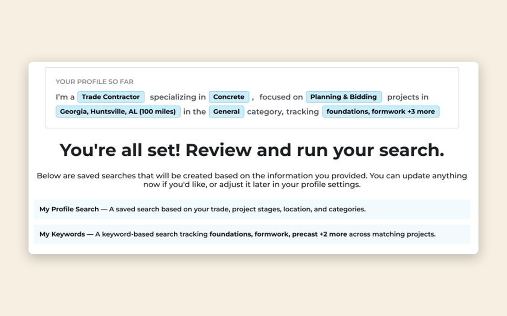
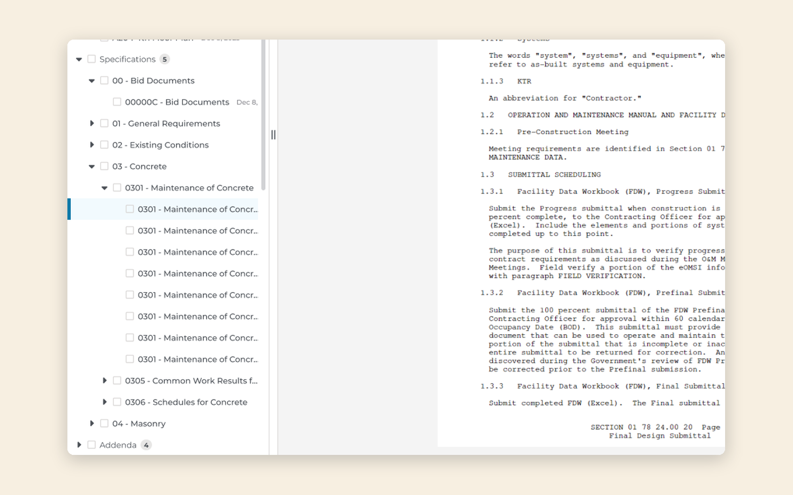

Search Assist · 2026 · Expanded beta
Designing an AI search feature users would actually trust with their judgment
+10%lift target vs control
≤5%thumbs-down ceiling

Guided Onboarding · 2026 · Shipped
Getting new users to a useful search before they gave up
85.3%onboarding completion
25.8%reached a curated match

Document Viewer · 2024 · Shipped
Rebuilding a scanned-plan viewer that was costing contractors bids
25%smaller downloads
<3sto first document view
10%+faster performance